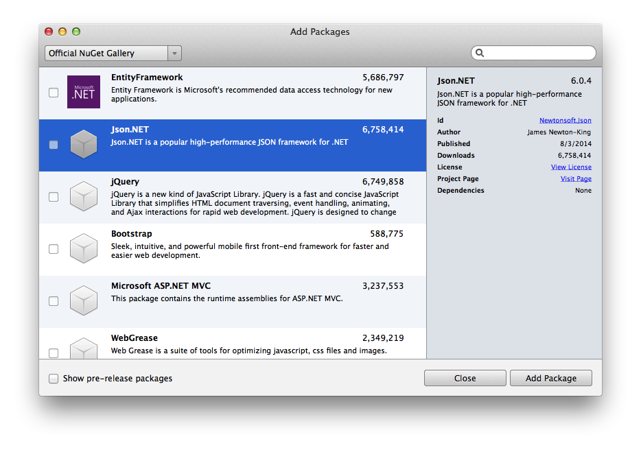
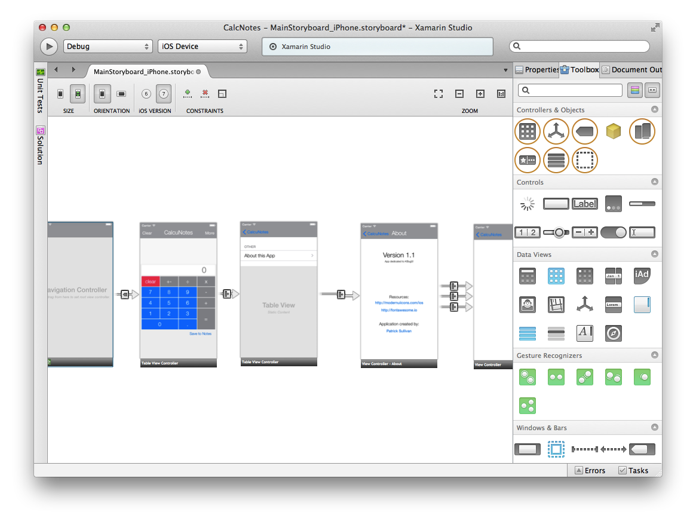

Over the past few months I have started using Xamarin Studio to start building few iOS apps that I have been putting off in an effort not to have to use Objective-C. As a .NET developer since I started in college I have always been preferential to Visual Studio as an IDE. I have mostly ended up running a Windows VM on a macbook. That is where Xamarin Studio comes in to the picture, being able to write and develop C# in a native mac environment is a dream come true. I have enjoyed how great the experience of using Xamarin Studio is even with its few little bugs that are getting worked out. With things like code completion, debugging, and deployment tools it is so easy to get started building great apps. Here are some of my favorite parts of Xamarin Studio for OS X.
The nuget package manager integration into Xamarin Studio is one of the reasons I really wanted to try it out in the first place. Having access to the libraries available through nuget.org is a huge resource for any developer using Xamarin Studio. For example, if you are communicating using web requests having the ability to add the Json.net package into your project is invaluable.

The iOS designer in Xamarin Studio is one of its most impressive feature to me. The designer lets a developer design the layout and appearance of the screens and UI elements very easily and quickly. It also gives you the ability to name elements and the ability to set up event handlers which is very similar to the way you may be familiar working if you have done WinForms development in Visual Studio. Another very useful feature of the iOS designer is the ability to design for multiple screen resolutions at the same time. Xamarin's iOS designer also lets you see custom controls in the design area as well as the regular UiKit controls.
In the screen grab below is the storyboard in Xamarin Studios iOS designer for my simple Calculator/Nots application that just recently got into the apple app store, Calcunotes. Check it out here in the app store.
